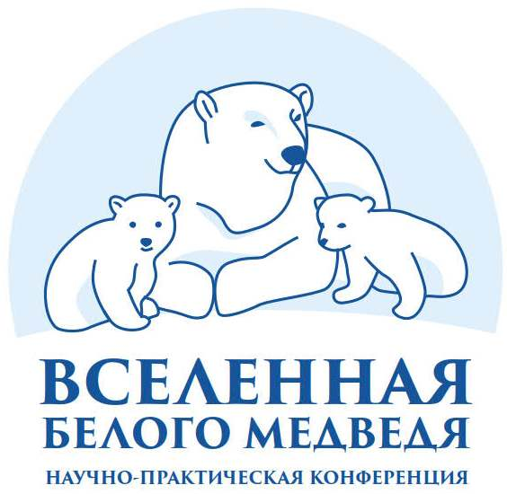

layout: true .banner.small[ <img src="assets/sevin.jpg" width="71" /> <img src="assets/sevin-expedition.png" width="82" />  ] --- class: metadata middle left name: H321 .sidebar.left-column[ # [Research Works](#Hd85) # [Modeling](#Hc10) # [Programming](#H311) ] .mainbar.right-column[ .author[Nikita Platonov] .institute[A. N. Severtsov Institute of Ecology end Evolution<br/>Russian Academy of Sciences] .title[Modeling and programming for research works on polar bears in the Russian Arctic] .subtitle[Overview of certain appoaches] .meeting[V<sup>th</sup> «Polar Bear Universe» Conference, 28-30 September 2021] .location[Chukotka, Anadyr] .date[] ] --- class: zzinverse, zzpicsum name: Hd85 .sidebar.left-column[ # [Research Works](#Hd85).fg[] ## [Program](#Hd85).fg[].bg[] ## [Activity](#H4e3) # [Modeling](#Hc10) # [Programming](#H311) ] .mainbar.right-column[ ### The Program For Polar Bear Researches In The Russian Arctic The Permanent Expedition of Russian Academy of Sciences + Estimating spatial-temporal distribution of polar bears + Evaluating polar bear movement patterns and habitat use parameters in the different temporal resolutions using satellite biotelemetry + Studying polar bear reproductive biology + Investigating feeding, provision by food resources, the dynamics of primary preys of polar bear + Detection natural and human-induced factors, which influence to polar bear reproduction and survival + Genetic identification of polar bears + Studying of intra-annual and inter-annual variability of sea ice and other habitat parameters ] ??? + Изучение пространственно-временного размещения животных в зависимости от средовых факторов + Оценка перемещений белого медведя и характера использования им местообитаний. + Изучение репродуктивной биологии белого медведя. + Изучение половозрастной структуры и демографических показателей популяций. + Изучение питания, кормовых ресурсов, распределения и динамики основных видов жертв белого медведя. + Изучение взаимоотношений белого медведя с другими видами животных и человеком. + Изучение роли природных и антропогенных факторов в динамике численности с особым вниманием к последствиям воздействия на популяции загрязняющих веществ, патогенных организмов и изменения климата. + Уточнение популяционной структуры географических популяций белого медведя с применением молекулярно-генетического и других современных методов анализа. + Изучение сезонной и межгодовой динамики ледовых местообитаний --- name: H4e3 .sidebar.left-column[ # [Research Works](#Hd85).fg[] ## [Program](#Hd85) ## [Activity](#H4e3).fg[].bg[] # [Modeling](#Hc10) # [Programming](#H311) ] .mainbar.right-column[ .pull-left[ ] .pull-right[ + Data collection + Measurements + Data downloading ] .pull-left[ ] .pull-right[ + Analysis & Reporting ] ] --- class: inverse middle name: Hc10 .sidebar.left-column[ # [Research Works](#Hd85) # [Modeling](#Hc10).fg[].bg[] ## [Habitat use](#He94) ## [Demography](#H8be) ## [Statistical Downscaling](#H6da) ## [Population size](#Hc43) ## [WWF® ArcNet Project](#Hd1c) # [Programming](#H311) ] .mainbar.right-column[ .huge[ + Data approximation + Predictor-predictand relationship ] ] --- name: He94 .sidebar.left-column[ # [Research Works](#Hd85) # [Modeling](#Hc10).fg[] ## [Habitat use](#He94) <span class="bullet bullet-active">[•](#He94)</span><span class="bullet mslide13">[•](#H508)</span>.fg[].bg[] ## [Demography](#H8be) ## [Statistical Downscaling](#H6da) ## [Population size](#Hc43) ## [WWF® ArcNet Project](#Hd1c) # [Programming](#H311) ] .mainbar.right-column[ Distribution of preferred habitat. + Circumpolar <abbr title="Resource selection function">RSF</abbr> <a name=cite-Durner2009></a>([Durner, et al., 2009a](#bib)). .onlyremark.small[Adoption: Figure 6 from ([Durner, et al., 2009a](#bib)).] + Chukchi Sea regional RSF <a name=cite-Wilson2014_Ecosphere></a>([Wilson, et al., 2014](#bib)), <a name=cite-Wilson2016></a>([Wilson, et al., 2016](#bib)). ] --- name: H508 .sidebar.left-column[ # [Research Works](#Hd85) # [Modeling](#Hc10).fg[] ## [Habitat use](#He94) <span class="bullet bullet">[•](#He94)</span><span class="bullet bullet-active">[•](#H508)</span>.fg[].bg[] ## [Demography](#H8be) ## [Statistical Downscaling](#H6da) ## [Population size](#Hc43) ## [WWF® ArcNet Project](#Hd1c) # [Programming](#H311) ] .mainbar.right-column[ ] --- name: H8be .sidebar.left-column[ # [Research Works](#Hd85) # [Modeling](#Hc10).fg[] ## [Habitat use](#He94) ## [Demography](#H8be) <span class="bullet bullet-active">[•](#H8be)</span><span class="bullet mslide15">[•](#Hb9e)</span>.fg[].bg[] ## [Statistical Downscaling](#H6da) ## [Population size](#Hc43) ## [WWF® ArcNet Project](#Hd1c) # [Programming](#H311) ] .mainbar.right-column[ The dynamical simulation for evaluation of polar bear demographical characteristics <a name=cite-demographyCS></a>([Platonov, 2019](#bib)). <div class="figure"> <div class="framed" style="height:480px"> <iframe src="assets/widget_unnamed-chunk-3_7e2b873acb8651b572aac9c5e919f12f.html" width="1330" height="480" class="ursa-widgetize"></iframe> </div> <p class="caption centered">In spring period a half of population is younger 4 yo </p> </div> ] --- name: Hb9e .sidebar.left-column[ # [Research Works](#Hd85) # [Modeling](#Hc10).fg[] ## [Habitat use](#He94) ## [Demography](#H8be) <span class="bullet bullet">[•](#H8be)</span><span class="bullet bullet-active">[•](#Hb9e)</span>.fg[].bg[] ## [Statistical Downscaling](#H6da) ## [Population size](#Hc43) ## [WWF® ArcNet Project](#Hd1c) # [Programming](#H311) ] .mainbar.right-column[ <div class="figure"> <div class="framed" style="height:550px"> <iframe src="assets/widget_unnamed-chunk-4_1e25d0f8932a8095dc15525262ded87d.html" width="1330" height="550" class="ursa-widgetize"></iframe> </div> <p class="caption centered">A half of females gives birth to 3 litters or less during their lifespan; the long-lived females can produce 10-11 litters </p> </div> ] --- name: H6da .sidebar.left-column[ # [Research Works](#Hd85) # [Modeling](#Hc10).fg[] ## [Habitat use](#He94) ## [Demography](#H8be) ## [Statistical Downscaling](#H6da).fg[].bg[] ### [Case 2020](#H593) ### [Case 2014](#H23e) ## [Population size](#Hc43) ## [WWF® ArcNet Project](#Hd1c) # [Programming](#H311) ] .mainbar.right-column[ ### Goal Short-term forecasting for sea ice and polar bear habitat ### Model development Canonical correlation analysis (<abbr title="Canonical correlation analysis">CCA</abbr>) applied to principal components (<abbr title="Principal Components">PC</abbr>). ### Data processing Singular value decomposition to produce temporal (PCs) and spatial (empirical orthogonal functions, <abbr title="Empirical Orthogonal Functions">EOFs</abbr>) patterns. ### Model validation Self-verification, one-fold cross validation, Bartlett's Chi-squared test, Multivariate regression one-fold cross validation. ] --- name: H593 .sidebar.left-column[ # [Research Works](#Hd85) # [Modeling](#Hc10).fg[] ## [Habitat use](#He94) ## [Demography](#H8be) ## [Statistical Downscaling](#H6da).fg[] ### [Case 2020](#H593).fg[].bg[] ### [Case 2014](#H23e) ## [Population size](#Hc43) ## [WWF® ArcNet Project](#Hd1c) # [Programming](#H311) ] .mainbar.right-column[ .smaller[ ### Forcing: 1. Air temperature of North America, North Atlantic and Europe in April 1. Sea level pressure of North America in April ### Response: Sea ice concentration in September ] ] --- name: H23e .sidebar.left-column[ # [Research Works](#Hd85) # [Modeling](#Hc10).fg[] ## [Habitat use](#He94) ## [Demography](#H8be) ## [Statistical Downscaling](#H6da).fg[] ### [Case 2020](#H593) ### [Case 2014](#H23e).fg[].bg[] ## [Population size](#Hc43) ## [WWF® ArcNet Project](#Hd1c) # [Programming](#H311) ] .mainbar.right-column[ .smaller[ ### Forcing: 1. Air temperature of North Atlantic in February 1. Air temperature of Subarctic (excluding North Atlantic) in March ### Response: Predictive model of habitat use by polar bears in September ] ] --- name: Hc43 .sidebar.left-column[ # [Research Works](#Hd85) # [Modeling](#Hc10).fg[] ## [Habitat use](#He94) ## [Demography](#H8be) ## [Statistical Downscaling](#H6da) ## [Population size](#Hc43).fg[].bg[] ## [WWF® ArcNet Project](#Hd1c) # [Programming](#H311) ] .mainbar.right-column[ .small[ ## Simulation of aerial survey in the Kara Sea .pull-left-30[ ] .pull-right-70[ *«Master of the Arctic» is a project for estimating polar bears distribution, abundance and health in the Russian Arctic based on aerial surveys and aerial-supported polar bear captures.* ] .pull-left[ ] .pull-right[ ] Routes were planned for potential spring aerial survey of Kara Sea polar bear subpopulation and based on available runways and aircrafts characteristics. Polar bear population size was based on ensemble of certain estimates. Winter and spring RSFs were used for simulation of polar bear distribution. It was found that "Beluga" software <a name=cite-ChelintsevBeluga></a>([Челинцев, 2014](#bib)) over-estimates population size, hovewer tweaks can be applied. ] ] --- name: Hd1c .sidebar.left-column[ # [Research Works](#Hd85) # [Modeling](#Hc10).fg[] ## [Habitat use](#He94) ## [Demography](#H8be) ## [Statistical Downscaling](#H6da) ## [Population size](#Hc43) ## [WWF® ArcNet Project](#Hd1c).fg[].bg[] # [Programming](#H311) ] .mainbar.right-column[ .pull-left-40.small[ ## An Arctic Ocean Network of Priority Areas for Conservation Multidisciplinary collaboration of many experts and scientific groups. A map of priority areas based on distribution of conservation features to represent marine biodiversity. Marxan software <a name=cite-marxannet></a>([Watts, et al., 2013](#bib)) was selected as a decision support tool to structure and process data and assist experts in identifying the priority areas for conservation. ] .pull-right-60.small[ .onlyremark[Figure adoption: [ArcNet Project](https://arcticwwf.org/work/ocean/arcnet/).] ] ] --- class: inverse middle name: H311 .sidebar.left-column[ # [Research Works](#Hd85) # [Modeling](#Hc10) # [Programming](#H311).fg[].bg[] ## [Web-based GUI](#H5c9) ## [Expeditional Dataware ](#Haea) ## [Reproducible research](#H513) ] .mainbar.right-column[ .huge[ + Simplify routine work + Reproducible research + Methods development ] ] --- name: H5c9 .sidebar.left-column[ # [Research Works](#Hd85) # [Modeling](#Hc10) # [Programming](#H311).fg[] ## [Web-based GUI](#H5c9).fg[].bg[] ### [Case: Polar Bear Demography](#H593) ### [Case: Polar bear LT and HR.](#Hf9c) ## [Expeditional Dataware ](#Haea) ## [Reproducible research](#H513) ] .mainbar.right-column[ + Input controls + Analysis (hidden) + Output visualizations Software and tools: R, Shiny <style type="text/css"> iframe { zoom: 1.75; -moz-transform:scale(1.75); -moz-transform-origin: 0 0; -o-transform: scale(1.75); -o-transform-origin: 0 0; -webkit-transform: scale(1.75); -webkit-transform-origin: 0 0; } </style> ] --- name: H593 .sidebar.left-column[ # [Research Works](#Hd85) # [Modeling](#Hc10) # [Programming](#H311).fg[] ## [Web-based GUI](#H5c9).fg[] ### [Case: Polar Bear Demography](#H593).fg[].bg[] ### [Case: Polar bear LT and HR.](#Hf9c) ## [Expeditional Dataware ](#Haea) ## [Reproducible research](#H513) ] .mainbar.right-column[ <iframe width="61%" height="365" src1="https://nplatonov.shinyapps.io/demography" src="http://127.0.0.1:9993/" frameborder="0" class="shiny" > </iframe> ] --- name: Hf9c .sidebar.left-column[ # [Research Works](#Hd85) # [Modeling](#Hc10) # [Programming](#H311).fg[] ## [Web-based GUI](#H5c9).fg[] ### [Case: Polar Bear Demography](#H593) ### [Case: Polar bear LT and HR.](#Hf9c).fg[].bg[] ## [Expeditional Dataware ](#Haea) ## [Reproducible research](#H513) ] .mainbar.right-column[ <iframe width="61%" height="365" src1="https://nplatonov.shinyapps.io/openday" src="http://127.0.0.1:9992/" frameborder="0" class="shiny" > </iframe> ] --- name: Haea .sidebar.left-column[ # [Research Works](#Hd85) # [Modeling](#Hc10) # [Programming](#H311).fg[] ## [Web-based GUI](#H5c9) ## [Expeditional Dataware ](#Haea).fg[].bg[] ## [Reproducible research](#H513) ] .mainbar.right-column[ Limited traffic + Use API for data download + Scheduled tasks to reduce interaction with other users ] --- name: H513 .sidebar.left-column[ # [Research Works](#Hd85) # [Modeling](#Hc10) # [Programming](#H311).fg[] ## [Web-based GUI](#H5c9) ## [Expeditional Dataware ](#Haea) ## [Reproducible research](#H513) <span class="bullet bullet-active">[•](#H513)</span><span class="bullet mslide30">[•](#bib)</span>.fg[].bg[] ] .mainbar.right-column[ + Dynamical Reports + Interactive Reports + This talk Software and tools: R, Rmarkdown ] --- class: middle inverse name: Hec7 .sidebar.left-column[ # [Research Works](#Hd85) # [Modeling](#Hc10) # [Programming](#H311) ] .mainbar.right-column[ .huge[ # Thank you! ] .small[ Team: Ilia Mordvintsev, Evgeny Ivanov, Sergey Naidenko, Vyatcheslav Rozhnov ] ] --- name: bib layout: false hide: true http://rspb.royalsocietypublishing.org/content/283/1836/20160380.full.pdf. .sidebar.left-column[ # [Research Works](#Hd85) # [Modeling](#Hc10) # [Programming](#H311) ] .mainbar.right-column[ .smallest.footnote[ **** <a name=bib-ChelintsevBeluga></a>[Челинцев, Р. Р.](#cite-ChelintsevBeluga) (2014). "Программа «БелуХа» для расчета численности белух РїРѕ данным авиаучета РІ Охотском РјРѕСЂРµ". In: _Бюллетень РњРћРРџ. Отдел биологический_ в„–6, pp. 3-16. URL: [https://cyberleninka.ru/article/n/programma-beluha-dlya-rascheta-chislennosti-beluh-po-dannym-aviaucheta-v-ohotskom-more](https://cyberleninka.ru/article/n/programma-beluha-dlya-rascheta-chislennosti-beluh-po-dannym-aviaucheta-v-ohotskom-more) (visited on Oct. 20, 2020). <a name=bib-Durner2009></a>[Durner, G. M., D. C. Douglas, R. M. Nielson, S. C. Amstrup, T. L. McDonald, I. Stirling, M. Mauritzen, E. W. Born, Г. Wiig, E. DeWeaver, M. C. Serreze, S. E. Belikov, M. M. Holland, J. Maslanik, J. Aars, D. A. Bailey, and A. E. Derocher](#cite-Durner2009) (2009a). "Predicting 21st-century polar bear habitat distribution from global climate models". In: _Ecological Monographs_ 79.1, pp. 25-58. ISSN: 1557-7015. DOI: [10.1890/07-2089.1](https://doi.org/10.1890%2F07-2089.1). <a name=bib-Durner2009></a>[Durner, G. M., D. C. Douglas, R. M. Nielson, S. C. Amstrup, T. L. McDonald, I. Stirling, M. Mauritzen, E. W. Born, Г. Wiig, E. DeWeaver, M. C. Serreze, S. E. Belikov, M. M. Holland, J. Maslanik, J. Aars, D. A. Bailey, and A. E. Derocher](#cite-Durner2009) (2009a). "Predicting 21st-century polar bear habitat distribution from global climate models". In: _Ecological Monographs_ 79.1, pp. 25-58. ISSN: 1557-7015. DOI: [10.1890/07-2089.1](https://doi.org/10.1890%2F07-2089.1). <a name=bib-demographyCS></a>[Platonov, N.](#cite-demographyCS) (2019). _nplatonov/demography: Comprehension of polar bear demographic parameters for the CS subpopulation_. DOI: [10.5281/zenodo.3524873](https://doi.org/10.5281%2Fzenodo.3524873). URL: [https://zenodo.org/record/3524873](https://zenodo.org/record/3524873) (visited on Sep. 07, 2019). <a name=bib-marxannet></a>[Watts, M. and H. Possingham](#cite-marxannet) (2013). _Marxan.net: Cloud infrastructure for systematic conservation planning._ URL: [http://marxan.net](http://marxan.net) (visited on Nov. 26, 2018). <a name=bib-Wilson2014_Ecosphere></a>[Wilson, R. R., J. S. Horne, K. D. Rode, E. V. Regehr, and G. M. Durner](#cite-Wilson2014_Ecosphere) (2014). "Identifying polar bear resource selection patterns to inform offshore development in a dynamic and changing Arctic". In: _Ecosphere_ 5.10. art136, pp. 1-24. ISSN: 2150-8925. DOI: [10.1890/ES14-00193.1](https://doi.org/10.1890%2FES14-00193.1). <a name=bib-Wilson2016></a>[Wilson, R. R., E. V. Regehr, K. D. Rode, and M. St Martin](#cite-Wilson2016) (2016). "Invariant polar bear habitat selection during a period of sea ice loss". In: _Proceedings of the Royal Society of London B: Biological Sciences_ 283.1836. ISSN: 0962-8452. DOI: [10.1098/rspb.2016.0380](https://doi.org/10.1098%2Frspb.2016.0380). eprint: URL: [http://rspb.royalsocietypublishing.org/content/283/1836/20160380](http://rspb.royalsocietypublishing.org/content/283/1836/20160380). ] ]